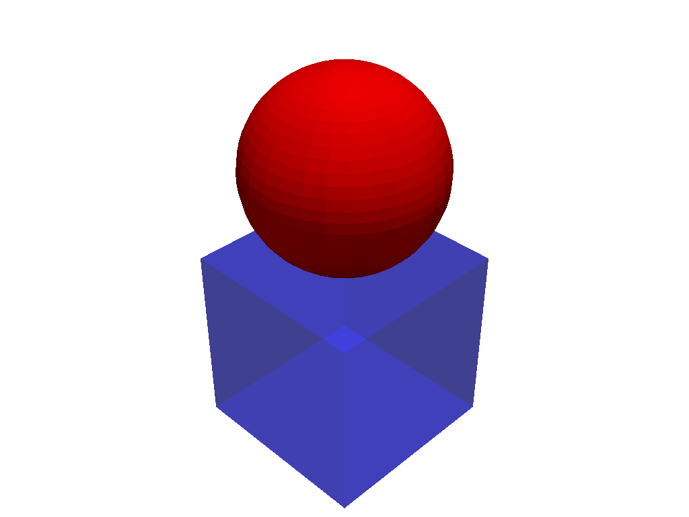

pyvista.Plotter.add_composite#
- Plotter.add_composite(dataset, color=None, style=None, scalars=None, clim=None, show_edges=None, edge_color=None, point_size=None, line_width=None, opacity=1.0, flip_scalars=False, lighting=None, n_colors=256, interpolate_before_map=True, cmap=None, label=None, reset_camera=None, scalar_bar_args=None, show_scalar_bar=None, multi_colors=False, name=None, render_points_as_spheres=None, render_lines_as_tubes=None, smooth_shading=None, split_sharp_edges=None, ambient=None, diffuse=None, specular=None, specular_power=None, nan_color=None, nan_opacity=1.0, culling=None, rgb=None, categories=None, below_color=None, above_color=None, annotations=None, pickable=True, preference='point', log_scale=False, pbr=None, metallic=None, roughness=None, render=True, component=None, color_missing_with_nan=False, copy_mesh=False, show_vertices=None, **kwargs)[ソース]#
プロッターにコンポジットデータセットを追加します．
- パラメータ:
- dataset
pyvista.MultiBlock pyvista.MultiBlockデータセットです．- color
ColorLike, default:pyvista.plotting.themes.Theme.color メッシュ全体を単一のソリッドカラーにします．文字列，RGBリスト，または16進カラー文字列．例:
color='white'，color='w'，color=[1.0, 1.0, 1.0]，color='#FFFFFF'．スカラーが指定されている場合，色は上書きされます．合成データセットの各要素を個別に着色するには，各サブデータセットに対してadd_meshを繰り返し呼び出す必要があります．- style
str, default: 'wireframe' メッシュの表示スタイル．
style='surface'，style='wireframe'，style='points'のいずれかです．デフォルトは'surface'です．'wireframe'は外部ジオメトリのワイヤフレームのみを表示することに注意してください．- scalars
str,optional データセットのポイントやセルに "色をつける" ために使用するスカラー．コンポジットデータセットに存在する配列の文字列名のみを受け付けます．
- climsequence[
float],optional スカラーの2項目カラーバーの範囲．デフォルトはスカラー配列の最小値と最大値です．例:
[-1, 2]．rngもこの別名として認められています．- show_edgesbool, default:
pyvista.global_theme.show_edges メッシュのエッジを表示します．ワイヤフレーム表示には適用されません．
- edge_color
ColorLike, default:pyvista.global_theme.edge_color show_edges=Trueの場合にエッジに適用される単色です．文字列，RGBリスト，または16進カラー文字列．デフォルトは
pyvista.global_theme.edge_colorです．- point_size
float, default: 5.0 プロットされたデータセット内の任意のポイントのポイントサイズ． style='points' の場合にも適用できます．デフォルト
5.0．- line_width
float,optional 線の太さ．ワイヤフレーム表示とサーフェス表示にのみ有効です．
- opacity
float, default: 1.0 メッシュの不透明度．メッシュの不透明度をグローバルに適用し，どこでも一様に適用される単一の浮動小数点値です - 0と1の間でなければなりません．
- flip_scalarsbool, default:
False cmapの方向を反転します．ほとんどのカラーマップでは，
*_rサフィックスも同様にこれを行うことができます．- lightingbool, default:
True ビュー方向の照明を有効または無効にします．
- n_colors
int, default: 256 スカラーを表示するときに使用するカラーの数．スカラーバーにもこの数の色があります．
- interpolate_before_mapbool, default:
True 有効にすると，より滑らかなスカラー表示になります．
Falseの場合，OpenGLはマップされたカラーを補間し，カラーマップに存在しないカラーを表示することがあります．- cmap
str|list, |pyvista.LookupTable, default:pyvista.plotting.themes.Theme.cmap 文字列の場合，
scalarsをマッピングする際に利用するmatplotlibのカラーマップ名です．利用可能なMatplotlibカラーマップを参照してください．scalarsを表示する場合にのみ適用されます．colormapは，このエイリアスとしても使用できます．colorcetまたはcmoceanがインストールされている場合は，それらのカラーマップを名前で指定できます．また，色のリストを指定して，既存のカラーマップをカスタムカラーマップで上書きすることもできます．例えば，3色のカラーマップを作成するには，
['green', 'red', 'blue']．このパラメータには
pyvista.LookupTableを指定することもできます．このパラメータが設定されている場合，n_colorsのようなカラーマップを制御するすべてのパラメータは無視されます．- label
str,optional pyvista.Plotter.add_legend()でシーンに凡例を追加するときに使用する文字列ラベル．- reset_camerabool,
optional このメッシュをシーンに追加した後，カメラをリセットします．デフォルトの設定は
Noneで，このプロッタがすでに表示されている場合のみ，カメラがリセットされます．Falseの場合は，プロッターの状態に関係なく，カメラはリセットされません．Trueの場合，カメラは常にリセットされます．- scalar_bar_args
dict,optional スカラーバーをシーンに追加するときに渡すキーワード引数のディクショナリ．オプションについては
pyvista.Plotter.add_scalar_bar()を参照してください．- show_scalar_barbool
Falseの場合，スカラーバーはシーンに追加されません．rgba=Trueを指定しない場合，デフォルトはTrueです．- multi_colorsbool, default:
False matplotlib の color cycler を使って，各ブロックを無地で着色します．
- name
str,optional 簡単に更新できるように，追加したメッシュ/アクターの名前．この名前のアクターがレンダリングウィンドウに既に存在する場合は，新しいアクターに置き換えられます．
- render_points_as_spheresbool, default:
False 点をドットではなく球としてレンダリングします．
- render_lines_as_tubesbool, default:
False 線分をフラットな線分ではなく太いチューブとして表示します．
line_widthで幅を制御します．- smooth_shadingbool, default: :attr`pyvista.plotting.themes.Theme.smooth_shading`
Phongシェーディングアルゴリズムを使用した
True時にスムーズシェーディングを有効にします．False時にはフラットシェーディングを使用します．pbr=True時に自動的に有効になります． シェーディングのタイプ を参照してください．- split_sharp_edgesbool, default:
False スムーズシェーディングでプロットする際に，30度を超えるシャープエッジを分割します． オプションのキーワード引数
feature_angleで角度を制御します． グローバルテーマやプロッタテーマで上書きされない限りはデフォルトではこれはFalseです． これを有効にすると，プロッタ内に入力メッシュのコピーが作成されることに注意してください． シェーディングのタイプ を参照してください．- ambient
float, default: 0.0 照明が有効な場合，これは，ビューアから放射された光源に向けられていないときにアクターに到達する0から1の範囲（デフォルトは0.0）の光の量です．
- diffuse
float, default: 1.0 拡散照明係数．
- specular
float, default: 0.0 鏡面反射光の係数．
- specular_power
float, default: 1.0 鏡面パワー．0.0から128.0．
- nan_color
ColorLike, default:pyvista.plotting.themes.Theme.nan_color プロットされたスカラー配列のすべての
NaN値に使用する色．- nan_opacity
float, default: 1.0 NaN値の不透明度．0から1の間でなければなりません．- culling
str, bool, default:False 選択された面はレンダリングされません．これは，高密度のサーフェイスメッシュ，特にエッジが表示されている場合に便利ですが，フラットメッシュが部分的に表示されることがあります．以下のいずれか1つです:
True- バックフェイスカリングを有効にします．"b"- バックフェースカリングを有効にします．"back"- バックフェースカリングを有効にします．"backface"- バックフェースカリングを有効にします．"f"- フロントフェイスカリングを有効にします．"front"- フロントフェイスカリングを有効にします．"frontface"- フロントフェイスカリングを有効にします．False- バックフェイスおよびフロントフェイスのカリングを無効にします．
- rgbbool, default:
False スカラーとして2次元の配列が渡された場合には，それらの値をRGB(A)カラーとしてプロットします．
rgbaという別名もあります． Opacity (A) はオプションです． もしも"_rgba"で終わるスカラー配列が渡された場合，デフォルトではTrueになります． これは，このパラメータにFalseを設定することで上書きすることができます．- categoriesbool,
optional Trueに設定すると，スカラー配列内の一意の値の数がn_colors引数として使用されます．バージョン 0.39.0 で非推奨: このキーワード引数は，使用されません．代わりに
n_colorsを使用します．- below_color
ColorLike,optional スカラー範囲 (
clim) 未満の値の単色．これにより，スカラーバーbelow_labelが自動的に'below'に設定されます．- above_color
ColorLike,optional スカラー範囲 (
clim) 未満の値の単色．これにより，スカラーバーabove_labelが自動的に'above'に設定されます．- annotations
dict,optional 注釈の辞書を渡します．キーはスカラー範囲のfloat値で，スカラーバーに注釈を付けます．値は文字列注釈です．
- pickablebool, default:
True このアクターを選択可能にするかどうかを設定します．
- preference
str, default: 'point' 各ブロックに，
block.n_points == block.n_cellsでスカラを設定した場合，このパラメータはスカラがどのようにメッシュにマッピングされるかを設定します． 例えば，'point'の場合，可能な場合スカラーはメッシュのポイントに関連付けられます．これは'point'または'cell'のいずれかです．- log_scalebool, default:
False データを色にマッピングするときは，ログスケールを使用します．0未満のスカラーは，表現可能な最小の正のfloatにマップされます．
- pbrbool, default:
False メッシュが
PolyDataの場合，Physics Based Rendering(PBR)を有効にします．color引数を使用してベースカラーを設定します．- metallic
float, default: 0.0 通常，この値は実際のマテリアルでは0または1ですが，中間の値は有効です．このパラメータはPBR補間でのみ使用されます．
- roughness
float, default: 0.5 この値は，0(光沢)と1(粗さ)の間である必要があります．光沢のあるマテリアルには，反射と高い鏡面反射部分があります．このパラメータは，PBR補間でのみ使用されます．
- renderbool, default:
True Trueのときに強制的にレンダーします．- component
int,optional プロットするベクトル値スカラーのコンポーネントを設定します．指定されている場合は負でない必要があります．
Noneの場合，ベクトルの大きさがプロットされます．- color_missing_with_nanbool, default:
False 欠損値には
nan_colorで色をつけます．これは，合成データセットのすべてのブロックが，指定したscalarsを持つわけではない場合に有効です．- copy_meshbool, default:
False Trueの場合，プロッタに追加する前にメッシュのコピーが作成されます．これは例えば，同じメッシュを複数回プロッタに追加して，異なるスカラーを表示させたい場合に便利です．copy_meshをFalseに設定すると，プロッタに追加した後にメッシュを更新し，例えばアクティブなスカラーを変更したり，インタラクティブウィジェットを介してレンダリングさせたい場合に必要とされます．- show_verticesbool,
optional styleが'points'でない場合，表面の外側の頂点をレンダリングします．以下のオプションのキーワード引数を使用すると，頂点のスタイルを制御することができます．vertex_color- 頂点の色vertex_style- スタイルを'points_gaussian'に変更します．vertex_opacity- 頂点の不透明度を制御します．
- **kwargs
dict,optional オプションのキーワード引数．
- dataset
- 戻り値:
pyvista.Actor合成されたデータセットのアクター．
pyvista.CompositePolyDataMapper複合 PolyData マッパー．
例
球体と立方体をマルチブロックデータセットとしてプロッターに追加し，ブロックの可視性と色を変更します．
インデックス
1と2は，複合データセットの個々のブロックにアクセスするために使用されることに注意してください．これは，pyvista.MultiBlockが "tree" のルートノードであり，インデックス0になっているためです．これにより，個々のブロックや，ネストした複数のコンポジットデータセットの場合には，コンポジットデータセットそのものにアクセスすることができます．>>> import pyvista as pv >>> dataset = pv.MultiBlock( ... [pv.Cube(), pv.Sphere(center=(0, 0, 1))] ... ) >>> pl = pv.Plotter() >>> actor, mapper = pl.add_composite(dataset) >>> mapper.block_attr[1].color = 'b' >>> mapper.block_attr[1].opacity = 0.5 >>> mapper.block_attr[2].color = 'r' >>> pl.show()
